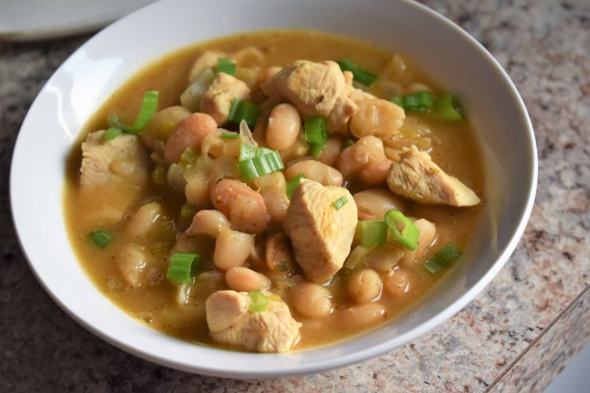

Home
All recipes and images were taken from All Recipes
Quick Chicken Chili

Description
This chicken chili has few ingredients with lots of flavor. If you are looking for something quick and healthy,
this is the recipe to use. This is wonderful over white or brown rice. Top with reduced-fat cheese and/or sour
cream--I do both!
Ingredients
-
1 medium onion, chopped
-
1 stalk celery, chopped
-
1 teaspoon fresh chopped garlic
-
salt and ground black pepper to taste
-
1 (4 ounce) can chopped green chilies
-
1 teaspoon chili powder, or more to taste
-
2 (16 ounce) cans cannellini beans, divided
-
2 cups chicken stock
-
12 ounces cubed cooked chicken
Steps
-
Combine onion and celery in a pot over medium heat. Cook about 5 minutes. Add garlic and cook until
vegetables are tender, about 2 minutes more. Season with salt and pepper. Add green chiles, then chili
powder and 1 can cannellini beans. Cook until flavors marry, about 5 minutes.
-
Meanwhile, pour remaining can of beans into a bowl and mash to a paste consistency. Add mashed beans to the
onion and bean mixture. Add chicken stock and cooked chicken. Reduce heat and simmer about 25 minutes.